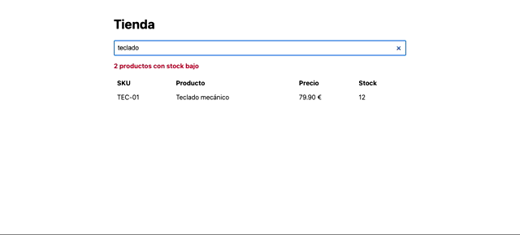

Hermes Agent, de cero a producción
Qué es el agente open source de Nous Research, cómo instalarlo y qué puedes hacer con él en la oficina y en tu código. Al final, cómo se compara con Claude, OpenClaw, Codex y el resto del mercado.
- Versión estable
- v0.21.6
- Publicada
- 8 oct 2026
- Licencia
- MIT
- Pruebas
- 21 reales · 1 guía
- Coste de todas las pruebas
- ≈ 0,31 $
Cada módulo tiene la explicación aquí y los ficheros en el repositorio de GitHub. Los ejemplos marcados probado se ejecutaron de verdad el 9 de octubre de 2026; los marcados guía siguen la documentación oficial porque necesitan cuentas externas. Marca cada módulo como completado para seguir tu progreso (se guarda solo en tu navegador).
Qué es Hermes y para qué sirve
Entender las piezas de un agente y qué hace distinto a Hermes antes de instalar nada.
Hermes Agent es un agente de IA autónomo y open source publicado por Nous Research el 25 de febrero de 2026. No es un modelo: es el programa que rodea a un modelo (Claude, GPT, Gemini, Hermes 4, uno local…) y le da manos, memoria y presencia.
Un chatbot responde; un agente actúa en bucle: piensa, llama a una herramienta (terminal, ficheros, web, navegador, MCP…), lee el resultado y decide el siguiente paso hasta terminar. Hermes añade a ese bucle tres cosas que lo diferencian:
- Vive fuera de tu sesión. Un proceso llamado gateway lo mantiene encendido en tu Mac o en un VPS, y puedes hablarle desde Telegram, Slack, Discord, WhatsApp, iMessage, email…
- Aprende. Guarda memoria sobre ti y tu entorno, y convierte lo que resuelve en skills reutilizables que él mismo escribe y mejora.
- Trabaja solo. Programa tareas con cron, recibe webhooks y entrega resultados donde le digas.
Para qué sirve bien
- Un asistente personal o de equipo 24/7, accesible desde el móvil.
- Automatizar trabajo recurrente: informes, vigilancia, resúmenes, triage.
- Tareas de ofimática "describe el resultado": Excel, Word, PDF, carpetas.
- Rodear tu trabajo de programación: CI, revisión de código, subagentes, entornos aislados.
Para qué no es la mejor opción
- Programar dentro del IDE con el mejor agente de código posible (ahí ganan Claude Code o Codex; Hermes los puede orquestar).
- Flujos 100 % deterministas con cientos de integraciones (n8n, Zapier).
- Usuarios no técnicos que no quieren tocar una terminal.
Glosario rápido
- Toolset: grupo de herramientas que el agente puede usar (
file,terminal,web,browser…). - Skill: carpeta con un
SKILL.mdque explica un procedimiento. Estándar abierto compartido con Claude. - Gateway: proceso en segundo plano que conecta Hermes con mensajería y ejecuta el cron.
- Backend de terminal: dónde se ejecutan los comandos (tu máquina, Docker, SSH, sandbox en la nube).
- Perfil: un Hermes independiente con su propia config, memoria y skills (
hermes -p trabajo).
Instalación y configuración
probadoInstalar Hermes, conectarlo a un proveedor de modelos y comprobar que responde.
Requisitos mínimos
| Mínimo | Recomendado / notas | |
|---|---|---|
| Sistema | macOS (Apple Silicon) · Windows 10/11 (x86_64, ARM64) · Linux con glibc (x86_64, aarch64) · WSL2 | Soporte prioritario (Tier 1). La app de escritorio MSIX exige Windows 11 22H2+. Linux probado sobre Ubuntu reciente. Intel Mac: solo la CLI, sin prioridad de soporte |
| Herramientas previas | git, curl, tar y shasum/sha256sum | Python, Node, uv, ripgrep y FFmpeg los trae el instalador. En Linux mínimo puede pedir sudo para instalar libatomic1 |
| RAM | 1 GB | 2–4 GB. Las herramientas de navegador (Chromium) son lo que más consume; sin ellas basta 1 GB |
| CPU | 1 núcleo | 2 núcleos. El modelo corre en la nube: no hace falta GPU |
| Disco | ~2,5 GB libres | Nuestra instalación completa ocupa 2,2 GB (330 MB son Chromium; --skip-browser lo omite). Los datos (sesiones, skills) crecen con el uso |
| Modelo | Contexto ≥ 64K tokens | Hermes rechaza al arrancar los modelos con menos contexto. Con modelos locales (Ollama, llama.cpp) sube ctx-size a 65536 |
| Cuenta | API key de un proveedor | OpenRouter, Anthropic, OpenAI, Nous Portal… o un servidor local |
| Red | Conexión a Internet | Para instalar y para hablar con el modelo (salvo modelo local) |
Fuente: Platform Support, Installation y Docker → Resource limits de la documentación oficial. Las cifras de disco son las medidas en nuestra instalación.
Instalar
curl -fsSL https://hermes-agent.nousresearch.com/install.sh | bash
# PowerShell
iex (irm https://hermes-agent.nousresearch.com/install.ps1)docker pull nousresearch/hermes-agent:stable
# monta un volumen en /opt/data para que la memoria y la config persistan# Descarga desde https://hermes-agent.nousresearch.com # macOS: Apple Silicon (Intel tiene bundle aparte) · Windows 11 22H2+ (MSIX) # Linux: sin paquete de escritorio oficial; instala la CLI y ejecuta hermes desktop # Si ya tienes la CLI: hermes desktop
El instalador trae su propio Python 3.14, Node, ripgrep, FFmpeg, uv y un Chromium para el navegador. No toca el Python de tu sistema. En nuestra prueba (Mac mini M-series) tardó unos 3 minutos y dejó instaladas 58 skills de serie.
Opciones útiles: --non-interactive, --skip-browser, --skip-computer-use. Ojo: el instalador sigue la rama main (nuestra prueba quedó en v0.21.6+301); para fijar una versión exacta usa --commit <sha>.
Dónde queda cada cosa
~/.local/bin/hermes ← lanzador (se añade al PATH en ~/.zprofile) ~/.hermes/ ├── hermes-agent/ ← código fuente (git) ├── config.yaml ← configuración sin secretos ├── .env ← API keys y tokens ├── SOUL.md ← identidad y tono del agente ├── memories/ ← MEMORY.md y USER.md ├── skills/ ← skills incluidas, instaladas y creadas por el agente ├── cron/ ← jobs y sus salidas └── sessions/ logs/ checkpoints/
Conectar un modelo (OpenRouter)
hermes model # asistente: elige OpenRouter, pega la clave, elige modelo hermes setup # asistente completo: modelo, terminal, gateway, herramientas
hermes model y hermes setup exigen una terminal interactiva real: fallan si los lanzas desde otro agente o un pipe. Y tras instalar, abre una terminal nueva: el PATH se actualiza en ~/.zprofile.
Alternativa sin asistente. hermes config set decide el fichero según la clave: MAYÚSCULAS van a .env, rutas con puntos a config.yaml.
hermes config set OPENROUTER_API_KEY sk-or-... hermes config set model.provider openrouter hermes config set model.default anthropic/claude-haiku-5.5
Comprobar
hermes --version
hermes doctor
hermes -z "Responde solo: OK y tu modelo" --usage-file uso.json
# → OK. Soy Hermes Agent con anthropic/claude-haiku-5.5 vía OpenRouter. (8 s, 0,0025 $)Requisito del modelo: al menos 64K tokens de contexto. Actualizar: hermes update. Copia de seguridad: hermes backup (incluye credenciales). Desinstalar: hermes uninstall --dry-run y luego --full.
Primeros pasos: modos y comandos
probadoSaber cuándo usar el chat interactivo y cuándo el modo one-shot para scripts.
| Modo | Comando | Cuándo |
|---|---|---|
| Interactivo | hermes · hermes --tui | Trabajo del día a día |
| One-shot | hermes -z "…" | Scripts, CI, pipes. Imprime solo la respuesta final |
| One-shot con sesión | hermes chat -Q -q "…" | Igual, y muestra el session_id para retomarla |
| Desde stdin | … | hermes chat -Q --query-file - | Pasarle datos generados por otro comando |
hermes chat -q "…" en una terminal real abre una sesión interactiva con ese primer mensaje. Para que responda y salga añade -Q, --oneshot o usa -z.
# 1. Pregunta con coste medido hermes -z "Explica en 3 líneas qué es un agente de IA" --usage-file uso.json # 2. Prompt + datos por stdin (echo "¿Qué ficheros ocultos son de configuración?"; ls -a ~) | hermes chat -Q --query-file - # 3. Otro modelo solo para esta consulta hermes -z "¿Quién eres?" -m openai/gpt-6.1-sol --provider openrouter # 4. Superficie mínima: solo ficheros y web hermes -t file,web -z "Resume https://hermes-agent.nousresearch.com en 3 viñetas" # 5. Retomar hermes -c # continúa la última sesión hermes --resume <id>
Slash commands que vas a usar a diario
| Comando | Para qué |
|---|---|
Ctrl+P · /help | Paleta de comandos y ayuda |
/model · /reasoning high | Cambiar de modelo y de nivel de razonamiento |
/new · /resume · /sessions | Gestionar conversaciones |
/usage · /context · /compress | Coste, contexto ocupado y compactarlo |
/plan | Que piense un plan antes de tocar nada |
/goal <objetivo> | Bucle hasta cumplirlo, con un modelo juez |
/bg <tarea> · /agents · /steer | Trabajo en segundo plano y subagentes en vivo |
/rollback · /diff | Deshacer cambios en ficheros |
/memory · /skills · /tools | Ver lo que sabe y lo que puede usar |
/yolo | Quitar aprobaciones. Solo en un entorno aislado |
Hermes en la oficina
probadoDescribir el resultado que quieres y dejar que Hermes elija las herramientas: Excel, Word, carpetas.
Hermes trae skills para docx, xlsx, pptx, pdf, Google Workspace, Notion, Airtable, Obsidian, Apple Notes/Reminders y correo. No hay que programar: el truco está en escribir el prompt como un encargo a un becario muy rápido: formato de salida, restricciones y qué hacer ante la duda. Ficheros en 02-ofimatica/.
A · CSV de gastos → Excel con fórmulas e informe 72 s
hermes chat -Q -q "Analiza gastos_T3_2026.csv. Crea informe_gastos_T3.xlsx con: hoja 'Datos' (los datos como tabla), hoja 'Resumen' con total por categoría y por mes (con fórmulas de Excel, no valores fijos) y un gráfico de barras por categoría. Después escribe resumen.md con 5 conclusiones para dirección, incluyendo cualquier gasto anómalo que detectes."
Qué hizo:
- Usó
SUMIFS/COUNTIFreales y añadió celdas de control que deben dar 0. - Encontró el gasto trampa que escondimos: un vuelo de 4.850 €, el 33 % del trimestre.
- Señaló dos partidas más a revisar, con su razonamiento.
- Total 14.505,46 €: lo verificamos con Python y cuadra al céntimo.
B · Transcripción de reunión → acta en Word 67 s
hermes chat -Q -q "A partir de transcripcion.txt genera acta_reunion.docx: título, fecha de hoy, asistentes, resumen en 3 líneas, decisiones tomadas, tabla de tareas (responsable, tarea, fecha límite) y temas pendientes. Formato profesional."
- Revisó el documento renderizado antes de entregarlo.
- Avisó de que "el jueves 16" no existe en octubre de 2026 (el 16 es viernes) y lo marcó en rojo.
- Las fechas límite que nadie dijo quedaron como "No fijada", sin inventarlas.
C · Ordenar una carpeta caótica 47 s
hermes chat -Q -q "La carpeta entrada/ está desordenada. Lee el contenido de cada fichero y organízalos en ordenado/ (facturas/, contratos/, notas/, otros/). Renombra con el formato AAAA-MM-DD_tipo_descripcion.txt usando la fecha del contenido (si no hay: 'sin-fecha'). No borres nada: copia, no muevas. Crea ordenado/INDICE.md con nombre original, nuevo y carpeta."
- Clasificó por contenido, no por nombre:
IMG_2041.txtera una foto de la pizarra y acabó en notas. - Con "09/12" sin año prefirió preguntar antes que adivinar.
Entrada (qué fichero) + salida exacta (nombre, formato, secciones) + restricciones (copiar, no mover; fórmulas, no valores) + algo auditable (índice, resumen). Para tus carpetas reales añade --checkpoints.
Ejercicios propuestos
- "Convierte los PDF de
facturas/en una hoja con proveedor, fecha, base, IVA y total." - "Hazme una presentación de 6 diapositivas a partir de
resumen.md." - Con la skill
email-inbox-triage: "¿Qué correos de hoy requieren respuesta?"
Memoria y skills
probadoHacer que Hermes recuerde quién eres y enseñarle procedimientos propios.
Memoria persistente
| Fichero | Qué guarda | Límite |
|---|---|---|
memories/USER.md | Quién eres y tus preferencias | ≈ 1.375 caracteres |
memories/MEMORY.md | Lo que ha aprendido de tu entorno | ≈ 2.200 caracteres |
hermes -z "Recuerda para siempre: prefiero importes con formato 1.234,56 € y fechas tipo 'viernes 9 de octubre'." cat ~/.hermes/memories/USER.md # entradas separadas por § hermes -z "¿Cómo formateas 1500 euros?" # sesión nueva → 1.500,00 €
Se inyecta al inicio de cada sesión, también en cron: nuestro job programado del módulo 5 formateó los importes así sin pedírselo. Para el historial completo el agente usa session_search sobre las sesiones pasadas.
Skills: procedimientos reutilizables
Una skill es una carpeta con SKILL.md (estándar agentskills.io, el mismo que usan Claude Code y Claude Desktop) y, si hace falta, templates/, scripts/ o references/. Hermes solo carga el nombre y la descripción de cada una; el cuerpo lo lee cuando la necesita.
--- name: email-seguimiento description: "Genera un correo de seguimiento por responsable a partir de un acta." version: 1.1.0 metadata: hermes: tags: [Reuniones, Email, Seguimiento] related_skills: [meeting-action-items, docx] --- # Email de seguimiento tras una reunión ## Procedimiento 1. Lee la fuente. Identifica decisiones y tareas con responsable y fecha. 2. Agrupa las tareas por responsable. 3. Rellena templates/email.md. Si una fecha no se fijó, escribe "a definir". 4. Escribe correos/AAAA-MM-DD_<nombre>.md 5. Valida: python3 ${HERMES_SKILL_DIR}/scripts/validar_correos.py correos/ ## Comprobaciones antes de terminar - Cada tarea aparece exactamente en un correo.
cp -r skills/email-seguimiento ~/.hermes/skills/productivity/ hermes chat -Q -s email-seguimiento -q "Prepara los correos de seguimiento de transcripcion.txt"
Cuatro borradores, uno por persona, con la plantilla aplicada. Además detectó que el 24 de octubre de 2026 cae en sábado y pidió confirmarlo.
Scripts dentro de la skill: el punto medio
La versión 1.1 de la skill trae scripts/validar_correos.py, y su SKILL.md obliga a ejecutarlo antes de terminar. ${HERMES_SKILL_DIR} se sustituye por la ruta de la skill. El script comprueba sin LLM lo que se puede comprobar con código: nombres de fichero, cabeceras, huecos sin rellenar y si cada día de la semana cuadra con el calendario.
python3 ${HERMES_SKILL_DIR}/scripts/validar_correos.py correos/
# OK 2026-10-09_marta.md
# ~ aviso (ya marcado para revisar): 'jueves 16 de octubre': el 16/10/2026 es viernes| Qué es | Cuándo | |
|---|---|---|
| Determinista | Un script, sin LLM | Lo que tiene una única respuesta correcta: validar, convertir, desplegar |
| Pseudodeterminista | Skill = procedimiento + scripts que el agente debe ejecutar | La mayoría de procesos de empresa |
| No determinista | Un prompt suelto | Explorar, redactar, decidir |
Skills de proyecto frente a skills de Hermes
~/.hermes/skills/ | <repo>/.hermes/skills/ | |
|---|---|---|
| Qué guardan | Tu forma de trabajar: el flujo, cómo redactas, cómo revisas | Cómo se ejecuta este producto: levantar el entorno, desplegar, datos de prueba |
| Quién las mantiene | Tú… y el propio agente, que las crea y parchea | El repo, con revisión de código |
| Se activan | Siempre | Tras hermes skills trust, y tienen prioridad |
| ¿Las toca el agente? | Sí: skill_manage y el curator | Esos dos no; pero no son de solo lectura |
Así un mismo Hermes trabaja en varios productos: el flujo vive en Hermes y la ejecución, en cada repo. Lo usamos en el módulo 10.
Higiene: que tu entorno no derive
Por defecto, una revisión en segundo plano tras cada turno puede crear o parchear skills y memoria sin preguntarte. Con semanas de uso, tu entorno ya no se parece al de nadie, y aparece el síntoma típico: sale un modelo nuevo y "a mí no me funciona", porque instrucciones pensadas para el modelo anterior lo frenan.
| Clave | Por defecto | Qué hace |
|---|---|---|
skills.write_approval | false | true: toda escritura de skills queda pendiente (/skills pending) |
memory.write_approval | false | Igual para la memoria (/memory pending) |
auxiliary.background_review.enabled | true | false: sin autoaprendizaje en segundo plano |
curator.enabled | true | Poda skills sin uso; hermes curator pin <skill> protege una |
hermes config set skills.write_approval true
hermes curator status
hermes profile export default -o mi-entorno.tar.gz # foto de tu entorno, sin credenciales- Que las escriba él: tras resolver algo,
/learno "guarda esto como skill". - Hub:
hermes skills search pdf,inspectantes deinstall(una skill puede ejecutar scripts).
Automatización: cron y blueprints
probadoProgramar trabajo recurrente, con o sin LLM, y elegir dónde llega el resultado.
Las tareas las dispara el gateway, que revisa el calendario cada 60 s. Sin gateway los jobs se crean pero no se ejecutan solos (Hermes te lo avisa al crearlos).
hermes gateway install && hermes gateway start # launchd en macOS, systemd en Linux hermes cron create "every monday 9am" \ "Lee /ruta/gastos_T3_2026.csv y dame en 3 viñetas el total y la categoría con más gasto." \ --name resumen-gastos-semanal --deliver telegram hermes cron list hermes cron run <id> # dispararlo ya, para probar
Horarios
- Una vez:
in 30m,2026-11-03T09:00:00 - Intervalo:
30m,every 2h - Natural:
weekdays at 9am,daily at 7am - Cron:
0 9 * * 1-5
Destinos (--deliver)
local→~/.hermes/cron/output/telegram,discord:#canal,slack,emailorigin: el chat donde lo pediste- Si no hay nada nuevo responde
[SILENT]y no envía nada
Watchdog sin LLM: coste cero
cp scripts/espacio_disco.sh ~/.hermes/scripts/
hermes cron create "every 1h" --name watchdog-disco --no-agent --script espacio_disco.sh --deliver telegram
# el script solo imprime si el disco supera el 85 %: salida vacía = no se notificaSin --no-agent, la salida del script se inyecta en el prompt: el script recoge datos y el modelo los interpreta.
El job con LLM devolvió cifras exactas y aplicó la memoria (formato 1.234,56 €). También vimos la seguridad desatendida: en cron los comandos de terminal que necesitan aprobación se deniegan, así que el agente calculó sin ejecutar su script y lo avisó.
Desde el chat o con blueprints
> Todos los días laborables a las 8:30 mándame por Telegram los titulares de IA de Hacker News /blueprint # morning-brief, important-mail, weekly-review, # price-watch, competitor-watch, news-digest… /blueprint morning-brief time=07:30 deliver=telegram hermes pause # parada de emergencia: cron, kanban y gateway
Disparo único tras un despliegue
Un job de una sola vez sirve para encadenar trabajo a algo que tarda: despliegas una preview, sabes que tarda unos minutos y programas la comprobación para cuando esté lista. Al ejecutarse, el job se borra solo.
cp scripts/smoke_despliegue.sh ~/.hermes/scripts/ # la URL se fija dentro del script hermes cron create "in 5m" --no-agent --script smoke_despliegue.sh --name smoke-pr-42 --deliver telegram # → ✅ http://127.0.0.1:8765 responde: 6 productos en el catálogo (llegó al móvil)
Sin --no-agent, el mismo job puede lanzar un agente que abra la URL en el navegador y recorra la feature: el E2E del módulo 10, disparado por el despliegue.
Mensajería: Hermes en Telegram
probadoHablar con tu agente desde el móvil, con la misma memoria y skills.
- En Telegram, @BotFather →
/newbot→ copia el token. - Tu ID de usuario te lo da @userinfobot.
- Configura y arranca:
hermes gateway setup # asistente, o bien: hermes config set TELEGRAM_BOT_TOKEN 123456:ABC... hermes config set TELEGRAM_ALLOWED_USERS 111222333 # imprescindible hermes gateway run # primer plano, para probar
Sin TELEGRAM_ALLOWED_USERS (o el emparejamiento con hermes pairing approve), cualquiera que encuentre tu bot tendría una terminal en tu máquina.
| En el chat | Para qué |
|---|---|
/approve · /deny | Autorizar comandos peligrosos desde el móvil |
/sethome | Este chat recibe las entregas del cron |
/handoff | Continuar la conversación en otra plataforma |
/update · /restart | Mantener el agente en remoto |
El bot conectó en unos 15 s en modo polling (no hace falta abrir puertos). Con /sethome, los avisos del cron y del tablero kanban llegaron al móvil. Una nota de voz no funcionó: hace falta un motor de voz a texto (Whisper local o un proveedor con API), y el propio bot lo explicó y ofreció alternativas.
Otras plataformas: Discord, Slack (Socket Mode), WhatsApp, Signal, iMessage (BlueBubbles), Email, Matrix, Teams, Google Chat… Para tenerlo 24/7, un VPS pequeño basta si el modelo está en la nube.
Hermes para programadores
probadoDarle contexto de proyecto, dejarle arreglar bugs con red de seguridad y deshacer si hace falta.
Contexto de proyecto
Hermes carga un fichero de contexto, por este orden: .hermes.md/HERMES.md → AGENTS.md (encadenados desde la raíz git) → CLAUDE.md → .cursorrules. Si ya usas Claude Code o Cursor, tus ficheros funcionan sin cambios. /init genera uno, y hermes import-agent importa tu configuración de ~/.claude o ~/.codex.
# Inventario — instrucciones para agentes ## Comandos - Tests: `uv run pytest -q` ## Convenciones - Precios en euros como float, redondeados a 2 decimales al devolverlos. - Cualquier cambio de comportamiento lleva su test en tests/. - No añadas dependencias sin preguntar.
Ejercicio: arreglar bugs con checkpoints 43 s
uv run pytest -q # 1 failed, 2 passed hermes chat -Q --checkpoints -q "Ejecuta los tests, encuentra la causa del fallo y corrígelo. Revisa además si hay otros bugs en src/ que los tests no cubran; si los hay, corrígelos y añade su test. Termina con un resumen breve de los cambios." uv run pytest -q # 6 passed
- Corrigió el descuento, que se restaba en euros después del IVA.
- Encontró el bug oculto:
<=donde el docstring decía "estrictamente". - Añadió validación del rango del descuento y 3 tests que fallaban antes del cambio.
- No hizo commit y explicó un cambio de comportamiento que conviene confirmar.
El diff completo está en solucion-referencia.patch.
Checkpoints y rollback
Con --checkpoints, Hermes guarda un repo git sombra en ~/.hermes/checkpoints/ antes de cada escritura o comando destructivo. No toca tu .git.
/rollback # lista de puntos de restauración /rollback diff 2 # qué cambió desde el 2 /rollback 2 # volver hermes checkpoints status
| Necesidad | Cómo |
|---|---|
| Varias tareas en paralelo sin pisarse | hermes -w crea un git worktree por sesión |
| Iterar hasta que todo pase | /goal "tests en verde y ruff sin errores" |
| Usarlo desde VS Code, Zed o JetBrains | hermes acp (Agent Client Protocol) |
| Delegar en otro agente de código | skills incluidas claude-code, codex, opencode |
| Metodología | skills test-driven-development, systematic-debugging, requesting-code-review |
MCP: tus propias herramientas
probadoConstruir un servidor MCP en 60 líneas y conectarlo a Hermes (y a cualquier otro agente).
MCP es el estándar para dar herramientas a un agente. El mismo servidor sirve para Hermes, Claude Desktop, Claude Code o Cursor. El nuestro expone el inventario de una tienda en SQLite.
# /// script # dependencies = ["mcp>=2.3"] # /// from mcp.server.mcpserver import MCPServer # mcp 2.x (en 1.x: FastMCP) mcp = MCPServer("tienda") @mcp.tool() def stock_bajo() -> str: """Productos con stock estrictamente por debajo de su mínimo.""" ... @mcp.tool() def registrar_pedido(sku: str, unidades: int) -> str: """Registra una venta y descuenta el stock.""" ... if __name__ == "__main__": mcp.run()
El SDK oficial de MCP ya va por la 2.x y FastMCP pasó a llamarse MCPServer. Muchos tutoriales de 2025 fallan con ModuleNotFoundError.
hermes mcp add tienda --command uv --args run "$PWD/servidor_tienda.py"
hermes -z "Dime qué productos hay que reponer y registra un pedido de 2 teclados TEC-01."
# → AUR-BT y RAT-01 bajo mínimo. Pedido registrado; stock de TEC-01: 10. (12 s)mcp_servers: tienda: command: uv args: [run, /ruta/absoluta/servidor_tienda.py] # tools: { exclude: [registrar_pedido] } # trust: untrusted
El pedido se registró sin pedir aprobación. Las aprobaciones de Hermes protegen la terminal, no las herramientas MCP. Diseña servidores de solo lectura por defecto, filtra con tools.exclude o pon la confirmación dentro de la propia herramienta.
Al revés también funciona: hermes mcp serve expone Hermes como servidor MCP para Claude Desktop o Cursor.
Entornos: dónde trabaja el agente
probadoSeparar el cerebro (modelo) de las manos (entorno) y preparar el entorno para que el agente rinda.
Un agente programador rinde tanto como el entorno que le das: dónde ejecuta, qué ve, qué herramientas tiene y cómo comprueba su trabajo. Invertir en eso suele dar más que acumular skills.
| Backend | Uso típico |
|---|---|
local | Por defecto, tu máquina |
docker probado | Aislamiento reproducible; tu sistema queda intacto |
ssh | Que trabaje en un servidor remoto |
modal · daytona · vercel_sandbox | Sandboxes efímeros en la nube |
singularity | Clústeres HPC |
terminal: backend: docker docker_image: python:3.13-slim docker_mount_cwd_to_workspace: true # monta el directorio de lanzamiento en /workspace cwd: "." # NO "/workspace": desactiva el montaje
Pusimos cwd: /workspace siguiendo un ejemplo y el contenedor arrancó vacío. Con cwd: "." el proyecto aparece montado y los tests corren en Linux aarch64 dentro del contenedor (21 s). Con backends de contenedor, /rollback no aplica.
Imagen efímera por tarea
Un paso más allá: en vez de un Hermes "vivo" que acumula memoria y skills, cada tarea arranca un contenedor nuevo de Hermes a partir de una imagen que controla el equipo. Mejorar el flujo es publicar una imagen nueva, no limpiar la máquina de cada persona. probado
FROM nousresearch/hermes-agent:v0.21.6 # versión fijada COPY --from=ghcr.io/astral-sh/uv:0.11.20 /uv /uvx /usr/local/bin/ # lo que necesitan tus repos COPY config.yaml SOUL.md /opt/data/ # config del equipo, sin secretos
docker build -q -t hermes-equipo:local imagen-equipo
docker run --rm \
--env-file <(grep '^OPENROUTER_API_KEY=' ~/.hermes/.env) \ # solo la clave, no todo el .env
-v "$REPO:/workspace" -w /workspace \
hermes-equipo:local -z "Ejecuta los tests y resume el estado. No modifiques ningún fichero."Resultado real sobre la tienda del módulo 10: "4 de 5 tests pasan y 1 falla", con la causa exacta, git status limpio al terminar y ningún contenedor ni volumen sobrante. Unos 30 s y 0,005 $ por tarea. La imagen ocupa 4,5 GB (trae Chromium, Node y ffmpeg): tenlo en cuenta al dimensionar el servidor.
- No montes la config del equipo como
/opt/data. Fue nuestro primer intento: el contenedor la llenó con 39 MB de estado (58 skills, cachés,state.db, el venv que se montó el agente)./opt/dataes unVOLUMEde la imagen: copia la config dentro de la imagen y cada--rmpartirá de cero. - Mete en la imagen las herramientas de tus repos. Sin
uv, el agente no podía ejecutar el comando deAGENTS.mdy se fabricaba un venv con pip en cada tarea. Conuven la imagen ejecuta lo que el repo indica. - La clave nunca va en la imagen. Comprobamos que Hermes no la escribe en disco: en
auth.jsonguarda solo su huella. - Pierdes la visibilidad de serie: con
--rmse van también las sesiones yhermes insights. Monta solologs/ysessions/en un volumen o envía la salida a tu sistema de logs.
Worktrees y permisos mínimos
| Necesidad | Cómo |
|---|---|
| Varias tareas a la vez sin pisarse | hermes -w, delegation.worktree_isolation: true, kanban create --workspace worktree |
| Que cada worktree pruebe de verdad | Su propia base de datos y su Redis en Docker, su puerto |
| Quitar herramientas | hermes tools disable web browser computer_use |
| Solo algunas herramientas MCP | mcp_servers.github.tools.include: [list_issues] |
Prohibir comandos siempre (incluso con --yolo) | approvals.deny: ["git push*"] |
Limitar dónde escribe write_file | HERMES_WRITE_SAFE_ROOT=/ruta |
Un agente proactivo que se atasca se las ingenia: codifica en base64 lo que no pasa un filtro, levanta un servidor auxiliar… Cuantas menos herramientas tenga, menos rodeos raros.
Dónde vive Hermes 24/7
Para un equipo, el entorno local no escala. Lo habitual es una máquina que controla el equipo técnico, igual para todos: un VPS de 1–2 vCPU y 2–4 GB, un servidor propio o un mini PC (una Raspberry Pi 4/400 con SO de 64 bits cumple los requisitos), o el contenedor oficial. Se accede por mensajería, por SSH o con una VPN privada como Tailscale para el dashboard. Dimensiona por tareas simultáneas: tres con navegador y base de datos propia no caben en 2 GB.
Subagentes en paralelo
hermes -z "Usa delegate_task para lanzar 3 subagentes EN PARALELO (sin modificar ficheros): 1) revisor de seguridad de src/, 2) revisor de cobertura de tests, 3) redactor de un README de 10 líneas. Combina sus resultados en un informe."
Tardó 31 s y cada subagente tuvo su propio contexto. Hasta 10 subagentes en paralelo; usa un modelo más barato para ellos con delegation.model.
Revisión de código en pre-push o CI
DIFF="$(git diff "$BASE" -- .)"
RESULTADO="$(hermes -t file -z "Revisa SOLO este diff... VEREDICTO: OK | BLOQUEANTE ... $DIFF" \
--usage-file .hermes-review-usage.json)"
grep -q "VEREDICTO: BLOQUEANTE" <<<"$RESULTADO" && exit 1Con -t file el revisor no tiene terminal ni web. Coste medido: 0,003 $ por revisión. En el repo hay una plantilla de GitHub Actions que comenta en la PR guía.
Hermes como equipo de desarrollo
probadoPasar de "un agente en mi portátil" a un flujo compartido por fases que cualquiera del equipo puede lanzar, con perfiles, tablero kanban, revisión y E2E.
Por qué el entorno local no escala
Mientras trabajas solo, tu portátil es el mejor sitio para el agente. El problema aparece cuando todo el equipo, incluida gente que no programa, quiere que los agentes implementen features o arreglen bugs:
| Problema | Qué pasa en la práctica |
|---|---|
| Cada entorno diverge | Cada persona acumula memorias y skills distintas. Sale un modelo nuevo y "a mí no me va": el arnés viejo lo frena |
| Las skills no fuerzan el proceso | Si el modelo no detecta que debe usar la skill, no la usa. "Ya lo tengo hecho"… sobre una rama vieja |
| Mantener a mano no escala | Repartir skills o plugins y comprobar que todos los tienen al día es un trabajo en sí mismo |
| Recursos | Base de datos, Redis y navegador no caben en el portátil pequeño de alguien de ventas |
| Cero visibilidad | Un agente en una terminal remota no te dice qué pasó en cada fase |
La salida no es escribir "mejores skills", sino montar un entorno compartido, controlado por el equipo técnico, igual para todos y observable. Hermes trae las piezas: perfiles, tablero kanban con dispatcher, /goal, revisión nativa, cron, mensajería y dashboard.
La arquitectura
| Pieza | Cómo se hace en Hermes |
|---|---|
| Un rol por fase | hermes profile create <rol> --clone: su SOUL.md, su config.yaml y sus toolsets |
| Encadenar fases | hermes kanban create … --assignee <rol> --parent <id>: no arranca hasta que su padre termina |
| Quién ejecuta | El dispatcher del gateway lanza un worker del perfil asignado (sin gateway, las tarjetas no se mueven) |
| Bucle implementar ↔ revisar | Nativo: kanban_request_review → kanban_request_changes o kanban_complete |
| Iterar hasta terminar | --goal --goal-max-turns 15: un juez revisa cada turno contra el texto de la tarjeta |
| Cómo se arranca este producto | Skill de proyecto en app-web/.hermes/skills/levantar-entorno (tras hermes skills trust) |
| Visibilidad | hermes dashboard → Kanban, hermes kanban watch, hermes kanban runs <id> |
Práctica: el ticket TIENDA-12
Una tienda web mínima (solo la biblioteca estándar de Python) con un bug, la búsqueda distingue mayúsculas, y una feature pedida por ventas: resaltar en rojo lo que hay que reponer y mostrar un contador.
./perfiles/crear-perfiles.sh # 4 perfiles con permisos mínimos, sin memoria ni autoaprendizaje hermes gateway run # en otra terminal: aloja el dispatcher ./pipeline.sh # copia la app a un repo git NUEVO y crea las 3 tarjetas hermes kanban watch # o: hermes dashboard → Kanban
SPEC=$(hermes kanban create "Especificar TIENDA-12" --assignee especificador \ --workspace "dir:$WORK" --body "$TICKET …" --json | jq -r .id) IMPL=$(hermes kanban create "Implementar TIENDA-12" --assignee implementador \ --parent "$SPEC" --workspace "dir:$WORK" --goal --goal-max-turns 15 \ --body "$TICKET Hecho cuando: criterios cumplidos y pytest en verde." --json | jq -r .id) hermes kanban create "E2E TIENDA-12" --assignee e2e --parent "$IMPL" --workspace "dir:$WORK" …
Ejecución real ≈ 12 min · ≈ 0,14 $
- Especificador (42 s): encontró la causa del bug y fijó criterios verificables, incluido uno que nadie pidió explícitamente: WEB-06, con stock exactamente 5, no se marca.
- Implementador: TDD (8 tests en rojo primero), commit y paso a revisión con evidencia criterio por criterio. Admitió lo que no pudo comprobar: "verificación visual en navegador: NO".
- Revisor, ronda 1: rechazó. El resaltado en rojo vivía en JavaScript y ningún test lo ejecutaba; el test añadido solo buscaba el texto de la regla CSS.
- Implementador, ronda 2: añadió un test que ejecuta el JS de la página. Revisor: aprobado.
- E2E: levantó la app con la skill del repo, escribió en el buscador y comprobó colores y posiciones en un Chromium real. Además encontró un bug que nadie buscaba: una condición de carrera en el buscador (con escritura muy rápida, la tabla muestra resultados de una búsqueda anterior). Lo dejó como ticket aparte, sin bloquear.
El informe de cada tarjeta, el diff y el vídeo están en salida-ejemplo/.

Tres tropiezos reales (y lo que enseñan)
En el primer intento escribimos en la tarjeta "cuando estén en verde, pide revisión con kanban_request_review". El juez exigía ver esa llamada como parte del objetivo y rechazó el paso a revisión tres veces; el implementador se bloqueó pidiendo ayuda (bien hecho). En la tarjeta va el QUÉ y los criterios; el procedimiento va en el SOUL.md del perfil.
Pidió un test de JavaScript con Node para un comportamiento visual que la fase E2E iba a comprobar igualmente en el navegador. No es un error, pero cuesta una ronda. Dile a cada fase qué validan las demás: "lo visual lo cubre el E2E".
Desde la v0.21, el navegador por defecto es browser_exec (Browser Use) y record_sessions solo graba con las herramientas clásicas. Hace falta browser.backend: "off" en el perfil E2E. Aun así, el vídeo fue casi estático: el agente verificó leyendo el DOM, no paseando por la página. Si quieres un vídeo de demo para el equipo, pídelo como fase aparte con un recorrido de usuario lento y, si quieres, narración con text_to_speech y ffmpeg.
El mismo flujo desde Telegram
Con el gateway conectado a Telegram (módulo 06), cualquiera del equipo puede encargar trabajo desde el móvil. El chat que crea la tarjeta queda suscrito y recibe un aviso cuando termina, se bloquea o falla:
/kanban create "Deuda técnica de la tienda" --assignee revisor --workspace dir:/ruta/al/repo \ --body "Resume en 5 viñetas la deuda técnica pendiente. No modifiques nada."
La tarjeta la recogió el perfil revisor y en 38 s devolvió cinco puntos de deuda, de más a menos grave: un XSS latente por innerHTML sin escapar, la misma condición de carrera que encontró el E2E, la lógica de stock bajo duplicada entre cliente y servidor, un test que se salta en silencio si no hay Node y ficheros .pyc versionados. El aviso de fin llegó al mismo chat.
Lecciones para montar el tuyo
- Céntrate menos en implementar y más en validar. Si al final tienes que revisar el código a mano, pregúntate qué validación falta: un test, una prueba de rendimiento si toca base de datos, un E2E.
- Decide qué es determinista. El orden de las fases lo fija un script; dentro de cada fase decide el modelo. Lo que pueda comprobar código, que no lo juzgue el modelo.
- Dale al agente el entorno completo de un desarrollador: base de datos propia por worktree, logs, navegador. Sin eso solo puede hacer tests unitarios y "creer" que funciona.
- Permisos mínimos por rol. El revisor no necesita navegador; el especificador no necesita escribir. Un agente proactivo atascado se inventa rodeos. Ojo: un perfil no es un sandbox.
- Tu arnés puede frenar al modelo. "Prioriza siempre lo más simple" tenía sentido con modelos que sobre-ingenierizaban; con los actuales puede empujarles a la solución peor (un timeout donde tocaba un watcher). Revisa SOUL, AGENTS.md y skills cada vez que cambies de modelo.
- No sobre-especifiques el cómo. Fija el qué y los criterios. Con modelos baratos puedes pedir varias variantes y quedarte con la que mejor pase las validaciones.
- Código fácil de revisar, para humanos y agentes: módulos con interfaces claras y la complejidad dentro (deep modules). Se leen interfaces y solo se baja al detalle donde algo huele mal.
- Construye tu propio flujo. Este pipeline es un punto de partida: tu producto puede necesitar dos fases o quince. Empieza pequeño y añade la validación que falte.
Para quitarlo todo: ./perfiles/borrar-perfiles.sh, hermes kanban archive … y parar el gateway.
Comparativa y cuándo usar qué
Situar Hermes frente a las alternativas de octubre de 2026 y decidir con criterio.
| Herramienta | Qué es | Dónde corre | Modelos | Tareas programadas | Mensajería | Licencia |
|---|---|---|---|---|---|---|
| Hermes Agent | Agente personal autónomo que aprende | Tu máquina, VPS, Docker | Cualquiera (OpenRouter, locales…) | Sí, 24/7 con el gateway | 20+ plataformas | MIT |
| OpenClaw | Asistente personal siempre encendido | Tu máquina, VPS | Varios proveedores | Sí | Sí, y apps móviles | Open source |
| Claude Desktop / Cowork | App de escritorio de Anthropic con conectores | Tu ordenador | Solo Claude | Sí, con el equipo encendido y la app abierta | No | Propietaria, suscripción |
| Claude Code + rutinas | Agente de programación | Terminal, IDE; rutinas en la nube de Anthropic | Solo Claude | Sí, rutinas en la nube | Integración con Slack | Propietaria, suscripción o API |
| Codex CLI | Agente de programación de OpenAI | Terminal, CI | OpenAI principalmente | Vía CI | No | Apache-2.0 |
| Gemini CLI | Agente de programación de Google | Terminal | Gemini | Vía CI | No | Apache-2.0 |
| Cursor | IDE con agente integrado | Editor; agentes en segundo plano | Varios | No es su foco | No | Propietaria |
| n8n | Flujos visuales con nodos de IA | Autoalojado o nube | Varios | Sí, deterministas | Por integraciones | Fair-code |
| Zapier (Agents) | Automatización sin código | SaaS | Los que ofrezca | Sí | Por integraciones | Propietaria |
| LangGraph · CrewAI | Frameworks para construir agentes | Tu código | Cualquiera | Lo programas tú | Lo programas tú | MIT |
A favor de Hermes
- Open source MIT y sin atarte a un proveedor: cambias de modelo con un flag.
- Siempre encendido en un VPS y accesible desde el móvil.
- Memoria y skills que mejoran con el uso, en formato estándar.
- Cron con entrega a donde quieras y watchdogs sin coste de LLM.
- 7 backends de ejecución, subagentes, MCP en los dos sentidos.
- Lee tu
AGENTS.md/CLAUDE.mde importa tu config de Claude Code. - Perfiles, tablero kanban y revisión nativa para montar un equipo de agentes por fases.
- Barato con modelos eficientes: todas las pruebas de este curso, ≈ 0,31 $.
En contra
- Va muy rápido: cientos de PRs por versión; flags y docs cambian de una semana a otra.
- Mucha superficie de ataque. La v0.21.6 corrigió fallos en el dashboard, en filtros git de repos no confiables y en el gateway de email.
- La calidad depende del modelo: con modelos pequeños falla más con herramientas y memoria.
- Más técnico que Claude Desktop: el despliegue y la seguridad son tuyos.
- Las herramientas MCP no pasan por las aprobaciones.
- Muy proactivo: si se atasca se inventa rodeos. Necesita límites y permisos acotados.
- Interfaz del dashboard funcional pero básica.
Si ya usas Claude Desktop y sus tareas programadas
Claude Desktop es más cómodo y no hay nada que mantener, pero sus tareas programadas dependen de que tu ordenador esté encendido con la app abierta y solo usan Claude. Hermes cubre el hueco cuando quieres que el trabajo ocurra aunque cierres el portátil, que el resultado te llegue a Telegram o Slack, o que una tarea barata la haga un modelo barato.
No es una elección exclusiva. Las skills tienen el mismo formato, un servidor MCP sirve a los dos, y hermes mcp serve te deja usar Hermes desde Claude Desktop.
Local frente a remoto y compartido
Para ti solo, el agente en tu portátil (Claude Desktop, Claude Code, Hermes local) es lo más cómodo. Cuando es un equipo el que delega trabajo, la pregunta cambia: ¿todos tienen el mismo entorno? ¿quién ve qué hizo el agente en cada fase? ¿qué pasa cuando el agente necesita una decisión y nadie está mirando?
Ahí pesa lo que Hermes trae de serie (perfiles por rol, tablero con logs por fase, cron, mensajería y una tendencia a resolver por su cuenta en lugar de quedarse esperando permiso), frente a agentes de código pensados para una persona delante de la terminal. El coste: la infraestructura y la seguridad son tuyas. Lo ves montado en el módulo 10.
| Si necesitas… | Elige |
|---|---|
| Un asistente 24/7 en el móvil, multimodelo, en tu servidor | Hermes (u OpenClaw) |
| Tareas personales en tu Mac con Claude, sin infraestructura | Claude Desktop / Cowork |
| Programar en serio dentro de un repo | Claude Code o Codex, con Hermes alrededor para CI, cron y revisión |
| Agentes de código que corren en la nube con horario | Rutinas de Claude Code o Hermes en un VPS |
| Que todo el equipo lance features y bugs con un flujo común y visible | Hermes en un servidor, con perfiles y kanban (módulo 10) |
| Flujos deterministas con cientos de integraciones | n8n / Zapier, con Hermes como paso inteligente vía webhook |
| Construir tu propio producto de agentes | LangGraph, CrewAI o el Claude Agent SDK |
Registro de pruebas
Todo lo que ejecutamos para preparar el curso, el 9 de octubre de 2026.
Entorno: Hermes v0.21.6+301 (main 8bff64d) · macOS Apple Silicon · anthropic/claude-haiku-5.5 vía OpenRouter, razonamiento high · Docker con OrbStack.
| Prueba | Módulo | Tiempo | Resultado |
|---|---|---|---|
| Instalación oficial | 01 | ≈ 3 min | OK, 58 skills incluidas |
| Primera consulta one-shot | 01 | 8 s | OK · 0,0025 $ |
| Prompt por stdin, cambio de modelo, toolset web | 02 | — | OK (corregido un slug de modelo inexistente) |
| CSV → Excel + informe | 03 | 72 s | OK, anomalía detectada, cifras verificadas |
| Transcripción → acta .docx | 03 | 67 s | OK, detectó fecha incoherente |
| Ordenar carpeta | 03 | 47 s | OK, 9 ficheros clasificados con índice |
| Memoria entre sesiones | 04 | — | OK |
| Skill propia email-seguimiento | 04 | 57 s | OK, 4 correos |
| Cron con LLM y watchdog sin LLM | 05 | — | OK, cifras exactas |
| Arreglar bugs con checkpoints | 07 | 43 s | OK, 2 de 2 bugs, 6 tests en verde |
| Servidor MCP propio | 08 | 12 s | OK tras migrar a mcp 2.x |
| Backend Docker | 09 | 21 s | OK tras corregir cwd |
| Subagentes en paralelo | 09 | 31 s | OK |
| Revisión de diff para CI | 09 | — | OK · 0,003 $ |
| Skill con script de validación | 04 | — | OK: detectó un día de la semana erróneo ya marcado por el agente |
| Cron de un solo disparo con entrega a Telegram | 05 | 1 min | OK, llegó al móvil y el job se borró solo |
| Gateway de Telegram | 06 | 15 s | OK; las notas de voz necesitan voz a texto |
| Pipeline por fases con 4 perfiles y kanban | 10 | ≈ 12 min | OK tras corregir el texto de la tarjeta --goal; 1 ronda de cambios; bug extra encontrado en E2E |
| E2E con grabación en vídeo | 10 | ≈ 3 min | OK tras browser.backend: off |
| Tarea kanban creada desde Telegram | 10 | 38 s | OK, aviso de fin en el chat |
| Imagen Docker efímera por tarea | 09 | ≈ 30 s | OK tras no montar /opt/data y añadir uv a la imagen · 4 ejecuciones ≈ 0,02 $ |
| GitHub Actions | 09 | — | No ejecutado: requiere cuenta externa |
| Total (hermes insights + consumo de la clave) | 35 sesiones | ≈ 0,31 $ |